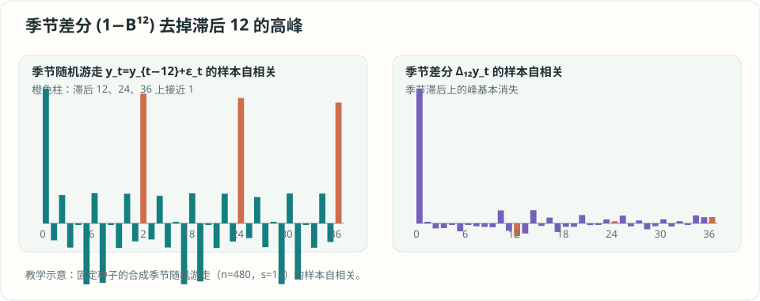
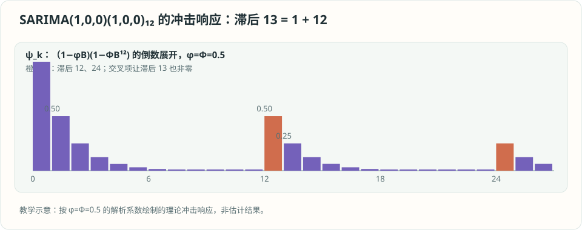
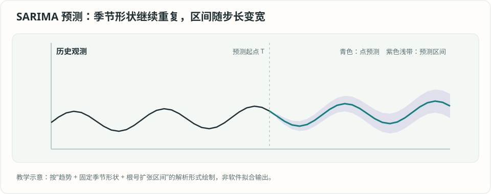

CHAPTER 12 / 28 · STATISTICAL MODELLING
季节性 ARIMA：同时刻画短程与季节依赖
SARIMA(p,d,q)(P,D,Q)s 在 ARIMA 之上叠加一层以周期 s 为间隔的季节结构。本章解释季节差分的含义、两层多项式的耦合、两段式定阶，以及为什么预测会再现季节形状。
第 11 章的差分只处理相邻时刻的依赖。但电商销量、电力负荷、气温这类序列的依赖发生在以固定周期为间隔的滞后上——今年 7 月与去年 7 月相关。普通 ARIMA 要在滞后 12、24、36 都放上参数才能逼近它，代价高且不自然。SARIMA 的做法是增加一套专门作用在季节滞后上的 ARMA 结构，而不是简单叠加两个独立模型。
需要先纠正一个误解：“有季节图形”不等于“必须做季节差分”。稳健的确定性季节性可以用季节哑变量或傅里叶项处理；只有当季节性本身随时间漂移（季节单位根）时，才对它差分，即 D=1。
01 · 季节性是一种远程依赖
若序列满足 yₜ=yₜ₋ᛋ+εₜ（季节随机游走），则相邻时刻几乎无关，但相隔 s 的观测高度相关，自相关在 s、2s、3s 处维持接近 1。ARMA 的“短程”假设无法直接表达这种结构。

yₜ=yₜ₋₁₂+εₜ 的自相关在滞后 12、24、36 上接近 1；右：做一次季节差分 Δ₁₂yₜ 后，这些峰基本消失。图为固定种子的合成数据教学示意，非真实序列。还要把季节性与不规则循环分开：季节性有固定周期，适合用 s 描述；循环（如商业周期）周期不固定，通常需要更长记忆或其他模型，不能硬塞进季节项。
02 · (p,d,q)(P,D,Q)s 记号
记号 SARIMA(p,d,q)(P,D,Q)s 分两组：小写 (p,d,q) 管非季节部分，与第 11 章相同；大写 (P,D,Q) 管季节部分，s 是周期长度。用滞后算子写出完整的乘积形式。
坐标选择上，s 由数据频率决定：月度 s=12，季度 s=4，周度 s=7（若按周聚合）。s 选错会让季节项作用在错误的滞爱上，是实践中高频的错误来源。
03 · 季节差分在做什么
非季节差分 Δyₜ=yₜ−yₜ₋₁ 比较的是相邻时刻；季节差分 Δ_s yₜ=yₜ−yₜ₋ₛ 比较的是相隔一个周期的同一相位，例如“今年 7 月 vs 去年 7 月”。用算子写作 Δ_s=(1−Bˢ)。
选择 D 同样要避免过度差分：如果季节形状多年稳定（只有确定性季节性），做 Δ_s 会在季节滞后上引入负相关（类似第 11 章的过度差分）。应先看季节滞后上的自相关是否随年份缓慢漂移，再决定 D。
04 · 季节与非季节成分的耦合
由于四个多项式是相乘的，展开后会出现混合滞后的交叉项。以最简单的 SARIMA(1,0,0)(1,0,0)₁₂ 为例，把 (1−φB)(1−ΦB¹²) 展开即可看出。

1·i+12·j 的滞后上，所以滞后 13 同时受普通反馈与季节反馈影响。图为按 φ=Φ=0.5 的解析系数绘制的教学示意，非估计结果。实务含义：看到滞后 13 的显著自相关时，先别急着加参数，它可能只是交叉项；反之也不能把 SARIMA 当成“两个独立 ARMA 相加”，因为它们会通过这样的交叉项相互影响。
05 · 两层 ACF/PACF 与定阶
定阶时分两层看：短滞后（1…s−1）决定 p、q，季节滞后（s、2s…）决定 P、Q。季节部分的规律与非季节平行，但有限样本相关图有噪声，不能机械照搬。
| 成分 | 季节滞后上的 ACF | 季节滞后上的 PACF |
|---|---|---|
| 季节 AR： SAR(P) | 拖尾（s、2s、3s 逐渐衰减） | 在滞后 Ps 后截尾 |
| 季节 MA： SMA(Q) | 在滞后 Qs 后截尾 | 拖尾 |
SARIMA 有七个维度（p,d,q,P,D,Q,s），手动搜索成本高。先用 auto.arima / pmdarima 在固定 s 下自动给出候选，再依据残差与前向预测微调。大多数情形 D≤1、P≤2、Q≤2 已足够，但“自动选出的最小 AICc”仍不是预测最优的证明。
06 · 预测再现季节形状
SARIMA 的多步预测会把估计到的季节形状重复外推，同时叠加非季节动态与漂移。因此与纯 ARIMA 不同，水平预测会呈现周期性起伏，而不是单调趋向一条线。

√h 变宽。图为按解析形式绘制的教学示意，非软件拟合输出。要警惕“季节性会无限精确重现”的错觉：若季节形状本身每年随机漂移（存在季节单位根），远处月份的区间会非常宽，因为季节相位的不确定性也被积分放大。
07 · 改变周期观察自相关峰
拖动滑块改变季节周期 s，看理论自相关峰出现的位置。峰在滞后 s、2s 处——这正是普通 ARMA 需要很多参数才能延迟到的“远程依赖”。
本图为理论自相关的示意，不是从真实数据估计出来的。
08 · Python：SARIMAX 拟合与预测
下面生成“确定性季节形状 + 随机游走水平”，用 SARIMAX 拟合 (0,1,1)(0,1,1)₁₂，对最后 24 期做一次性多步预测。只依赖 numpy 与 statsmodels。
import numpy as np
from statsmodels.tsa.statespace.sarimax import SARIMAX
from statsmodels.stats.diagnostic import acorr_ljungbox
rng = np.random.default_rng(12)
n = 300
t = np.arange(n)
season = 6.0 * np.sin(2 * np.pi * t / 12) # 确定性季节形状
y = season + np.cumsum(rng.standard_normal(n)) # 叠加随机游走水平
train, test = y[:-24], y[-24:]
fit = SARIMAX(train, order=(0, 1, 1), seasonal_order=(0, 1, 1, 12),
trend="c", enforce_stationarity=False,
enforce_invertibility=False).fit(disp=False)
forecast = fit.forecast(steps=len(test))
print("样本外 MAE:", np.mean(np.abs(forecast - test)))
print(acorr_ljungbox(fit.resid, lags=[24]))
assert len(forecast) == len(test) == 24seasonal_order=(P,D,Q,s) 中的 s 必须与数据的真实周期一致。此处 s=12 与生成过程匹配；如果误设为 4，季节差分就作用在错误的滞爱上。示例只验证结构性质（预测长度一致、可用残差检验），不声称 SARIMA 优于更简单的季节基准；真实项目应对比季节朴素法。
09 · 与诊断章的衔接
SARIMA 把第 11 章的差分扩展到季节维度，是经典 ARIMA 家族里参数最多的一员。参数一旦变多，过拟合、根越界与残差自相关的风险也随之上升。下一章把散落在各章的检查整理成一个可执行的 Box–Jenkins 建模流程：如何看残差、如何做假设检验、如何避免常见陷阱。
进一步阅读与技术核对
引用指向定义、接口与检验的官方资料。文中的图与模拟均为教学示意，并非经验表现的证明。